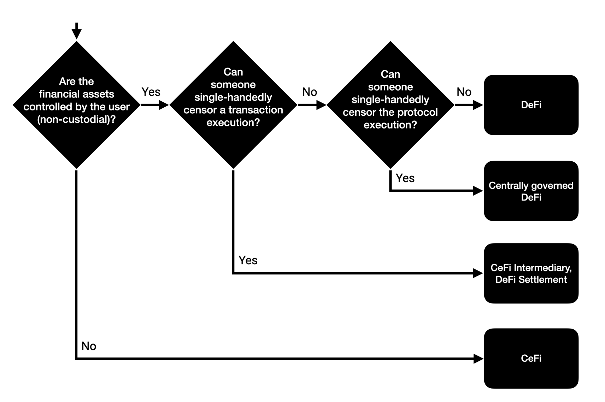
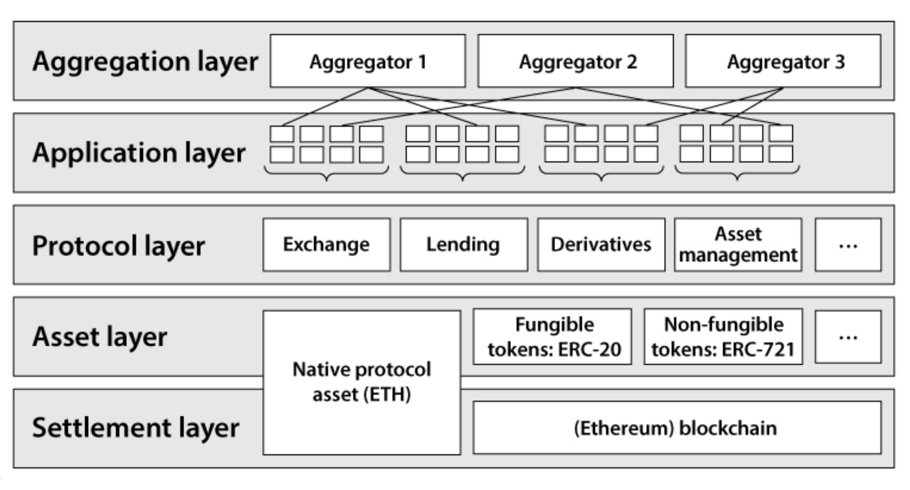

Brief Introduction to DeFi
Overview
Decentralized finance, or DeFi, has emerged as a promising alternative to traditional finance in recent years. Built on the principles of open, permissionless, and highly interoperable protocol stacks, DeFi has the potential to revolutionize the way we think about financial services.
CeFi vs. DeFi
The centralized finance system has three main characteristics: it holds custodies of customers' funds, it intermediates for transactions, and it lacks privacy. DeFi, on the other hand, is built on decentralized smart contract platforms and is permissionless, non-custodial, and decentralized trust-based. In terms of privacy, DeFi offers pseudonymity, as balances, transactions, and timestamps are all public, but real identities are not disclosed.

Advantages
Efficiency and transparency are two major advantages of DeFi. DeFi protocols enable transactions to be executed automatically through smart contracts, without the need for intermediaries. This reduces transaction costs, increases efficiency, and enables faster settlement times. Additionally, DeFi protocols are transparent, as anyone can inspect the smart contract code and verify the execution and state of the system.
Stack & Layer
The DeFi stack consists of 5 main roles: users, protocols, keepers, oracles, and bridges.
Users are the individuals who interact with the DeFi protocols, while protocols are the sets of rules and smart contracts that define how those interactions take place. Keepers are automated agents that maintain the state of the system, while oracles provide external data to the protocols. Finally, bridges are the mechanisms that enable DeFi protocols to interact with each other and with external systems.
DeFi can be divided into 5 layers based on their functionality and purpose:
-
Settlement layer - this layer consists of the underlying blockchain technology that supports DeFi applications and infrastructure.
-
Asset Layer - this layer refers to the creation, distribution, and management of digital assets such as cryptocurrencies and tokenized assets. It enables the issuance and transfer of assets on a decentralized network, allowing for greater liquidity and accessibility of financial assets.
-
Protocol layer - this layer consists of the decentralized protocols and smart contracts that provide the underlying functionality for different DeFi applications, such as decentralized exchanges, lending platforms, and asset management protocols.
-
Application layer - this layer consists of the end-user-facing DeFi applications that utilize the underlying protocols and infrastructure to provide specific financial services, such as trading, lending, or investing.
-
Aggregation layer - this layer includes the various services that support DeFi applications and users, such as wallets, market data providers, and analytics tools.

Services
DeFi offers a wide range of services, including decentralized exchanges, decentralized lending and so on.
Decentralized exchanges allow users to trade cryptocurrencies without the need for a central authority or intermediary, providing greater transparency and autonomy. Decentralized lending enables users to lend and borrow assets within one transaction, without the need for a credit score or centralized financial institution. People can use decentralized lending, such as flash loans, to engage in arbitrage and make profits.

Risks
Like any emerging technology, DeFi is not without risks. Security risks, such as network attacks, consensus attacks, and smart contract bugs, can lead to financial losses. Additionally, there are systematic risks associated with DeFi, such as liquidation problem, price declines, and high transaction fees. It is important for users to be aware of these risks and to take appropriate measures to mitigate them.
Open Research Challenges
There are several open research challenges in DeFi, including program and protocol analysis and verification, incentive design, and the interaction between CeFi and DeFi. As DeFi continues to grow and evolve, addressing these challenges will be crucial to its continued success.
Conclusion
In summary, DeFi is a transformative development that enables greater accessibility, transparency, and autonomy in the financial sector. DeFi applications are faster, cheaper, and more secure than traditional finance by utilizing decentralized networks and smart contracts.
However, there are also risks associated with DeFi, including security vulnerabilities, systemic risk, and the lack of regulatory oversight. As DeFi continues to evolve, it will be crucial to address these risks and ensure that its benefits can be enjoyed by a wider audience.